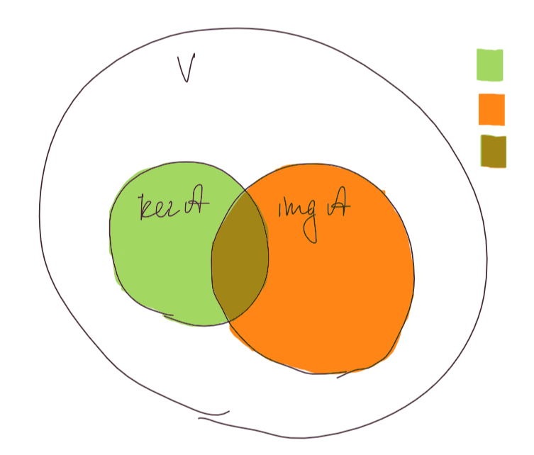

Теорема: Пусть \(V\) – векторное пространство размерности \(n\) над алгебраически замкнутым полем \(F\), \(\mathcal{A}\) – линейный оператор на \(V\). Тогда существует базис, в котором матрица оператора \(\mathcal{A}\) является жордановой.
Доказательство:

Если \(\mathcal{A}\) невырожден(его матрица невырождена), то можем рассматривать вырожденный линейный оператор \(\mathcal{A} - \lambda \mathcal{I}\), где \(\lambda\) – собственное значение \(\mathcal{A}\) (сущесвует, так как поле алгебраически замкнуто). Почему можно рассматривать такой оператор? И почему \(\mathcal{A} - \lambda \mathcal{I}\) – вырожден?
Если \(\ker \mathcal{A} = V\), то жорданова нормальная форма – нулевая матрица, и жордановым является любой базис. \(\mathcal{A}\) – вырожден, а значит \(\ker \mathcal{A} \ne \{0\}\).(Почему?)
Индукция по \(n\):
Далее \(0 < \dim \ker \mathcal{A} < n\), тогда из \(\dim \ker \mathcal{A} + \dim \operatorname{img} \mathcal{A} = n\) следует, что \(0 < \dim \operatorname{img} \mathcal{A} < n\), а значит по предположению индукции 🕵️ у \(\mathcal{A}_{|\operatorname{img} \mathcal{A}}\) существует жорданова нормальная форма \(\operatorname{J}_{\operatorname{img}\mathcal{A}}\) и в ней есть жордановы клетки с \(0\) на диагонали, так как \(\mathcal{A}\) – вырожден. (И что с того?) Пусть клеток с \(0\) на диагонали \(s\). Жорданов базис матрицы \(\operatorname{J}_{\operatorname{img}\mathcal{A}}\) – это объединение жордановых базисов ее клеток. Запишем жорданов базис для \(\mathcal{A}_{|\operatorname{img} \mathcal{A}}\) \(e = \{e_{11}, \ldots, e_{1k_1}, \ldots, e_{s1}, \ldots, e_{sk_s}, \ldots, e_{s+1 1}, \ldots, e_{s + 1 k_{s + 1}}, e_{m1}, \ldots, e_{mk_m}\}\), где \(k_1, \ldots, k_m\) – размеры жордановых клеток, \(\lambda_1 = \ldots = \lambda_s = 0\), \(m\) – количество жордановых клеток. Пусть \(V_0\) подпространство в \(\operatorname{img} \mathcal{A}\) с собственным значением ноль, имеем: \(V_0 = \{v \in V: \,\,\,\, \mathcal{A}(v) = 0 \cdot v\} = \ker \mathcal{A}\). То есть \(\operatorname{img} \mathcal{A} \cap \ker \mathcal{A} = V_0\). Размерность \(V_0\) равна количеству клеток с \(0\) на диагонали, то есть \(s\). Векторы \(e_{12}, \ldots, e_{s2}\) линейно независимы, а следовательно являются базисом \(V_0\). Дополним \(e_{12}, \ldots, e_{s2}\) векторами \(f_1, \ldots, f_q\) до базиса \(f\) подпространства \(\ker \mathcal{A}\). \[\dim (\operatorname{img} \mathcal{A} \cap \ker \mathcal{A}) + \dim(\operatorname{img} \mathcal{A} + \ker \mathcal{A}) = \dim \operatorname{img} \mathcal{A} + \dim \ker \mathcal{A}\] \[\dim \operatorname{img} \mathcal{A} + \dim \ker \mathcal{A} = n\] \[\Downarrow\] \[\dim (\operatorname{img} \mathcal{A} + \ker \mathcal{A}) = n - s\] Так как \(\operatorname{img} \mathcal{A} + \ker \mathcal{A}\) – это линейная оболочка векторов из \(f\) и \(e\), которые являются линейно независимыми, а следовательно базисом \(\operatorname{img} \mathcal{A} + \ker \mathcal{A}\), получаем, что нужно добавить \(s\) векторов к \(f \cup e\), чтобы получить базис \(V\). Добавим векторы \(g = \{g_1, \ldots, g_s\}\): \[\mathcal{A}(g_1) = e_{1k_1}\] \[\mathcal{A}(g_2) = e_{2k_2}\] \[\vdots\] \[\mathcal{A}(g_s) = e_{sk_s}\] Такие векторы существуют, потому что \(e_{1k_1}, \ldots, e_{sk_s}\) принадлежат \(\operatorname{img}\mathcal{A}\).
Докажем, что \(g \cup f \cup e\) – базис в \(V\). Количество векторов верное, осталось доказать линейную независимость. Рассмотрим линейную комбинацию равную \(0\):
\[\displaystyle \sum_{i = 1}^{s}\alpha_i g_i + \displaystyle \sum_{i = 1}^{q}\beta_i f_i + \displaystyle \sum_{i = 1}^{s}\displaystyle \sum_{j = 1}^{k_i}\gamma_{ij} e_{ij} + \displaystyle \sum_{i = s}^{n}\displaystyle \sum_{j = 1}^{k_i}\gamma_{ij} e_{ij} = 0\]
Применим к этой линейной комбинации \(\mathcal{A}\): \(0 + \displaystyle \sum_{i = 1}^{s}\alpha_i e_{ik_i} +\) комбинация векторов \(e_{ij} = 0\), а так как все \(e_{ij}\) линейно независимы, все коэффиценты равны \(0\).
Если увеличить разверы всех клеток с \(0\) на диагонали на \(1\)(векторы \(g_1, \ldots, g_s\), дополняют базис каждой клетки до базиса клетки с размером на \(1\) больше) и добавить \(q\) клеток с \(0\) на диагонали, то получим искомую жорданову нормальную форму \(\,\,\,\,\blacksquare\)
все так сложно
Теорема: Пусть \(V\) – конечномерное векторное пространство над алгебраически замкнутым полем \(F\), \(\mathcal{A}\) – линейный оператор на \(V\). Тогда \(\mathcal{A}\) диагонализируем \(\Leftrightarrow\) минимальный многочлен \(\mu_{\mathcal{A}}(t)\) не имеет кратных корней.
Доказательство:
\[\Rightarrow\] Поле алгебраически замкнуто, следовательно существует базис, в котором матрица \(\mathcal{A}\) жорданова. \(\mu_{\mathcal{A}}(t) = \displaystyle \prod_{i = 1}^{s}(t - \lambda_i)^k_i\), где \(k_i\) размер жордановой клетки с \(\lambda_i\) на диагонали. Оператор \(\mathcal{A}\) диагонализируем, следовательно все клетки в жордановой нормальной форме размера \(1\), а значит \(\mu_{\mathcal{A}}\) не имеет кратных корней. \[\Leftarrow\] В обратную сторону \(\,\,\,\,\blacksquare\)
Определение: Матрица \(A \in M_n(F)\) подобна матрице \(B \in M_n(F)\), если \(\exists C \in M_n(F): \,\,\,\, A = C^{-1}BC\).
Следствие: Любая матрица \(A\) над алгебраически замкнутым полем подобна некоторой жордановой матрице.
Доказательство: По теореме существует базис в векторном пространстве строк, в котором матрица линейного оператора, заданного матрицей \(A\), жорданова. Далее по формуле перехода от одного базиса к другому получаем утверждение следствия \(\,\,\,\,\blacksquare\)